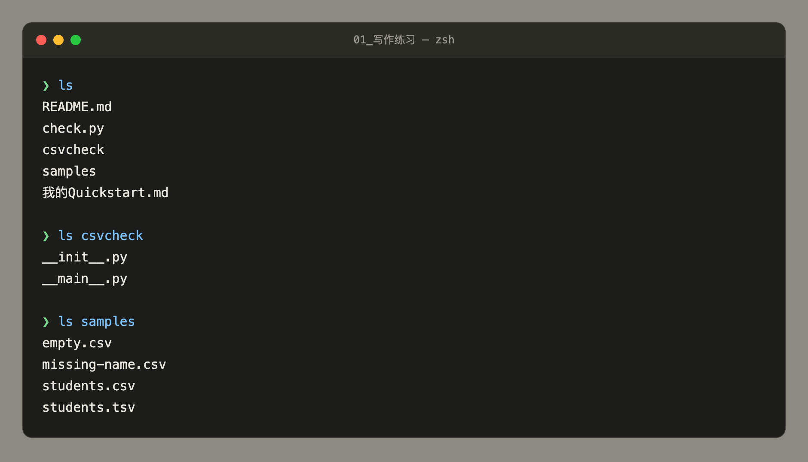
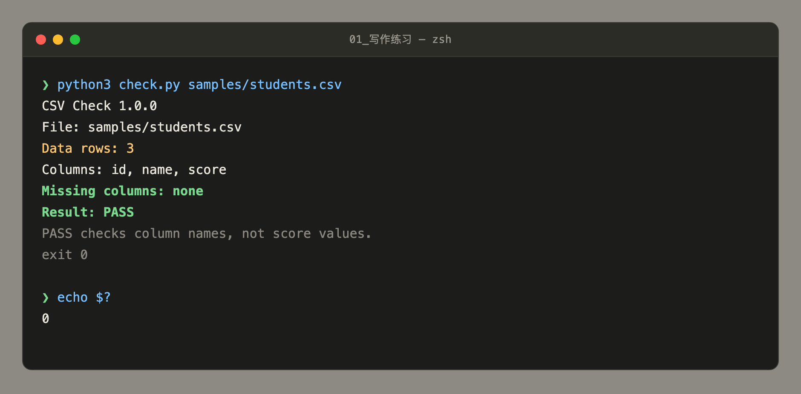
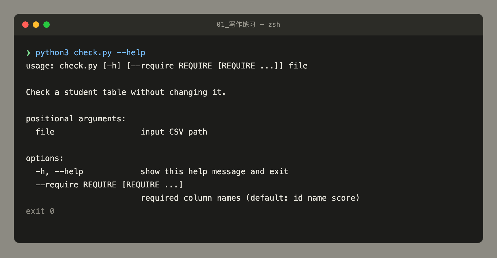
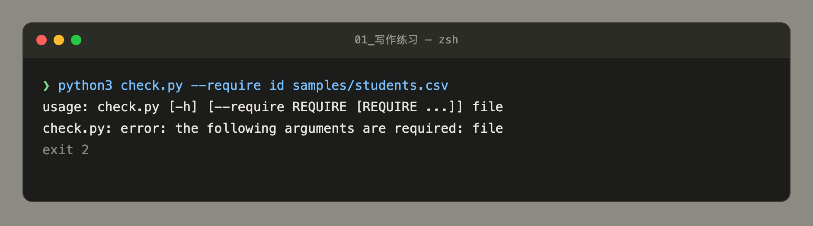
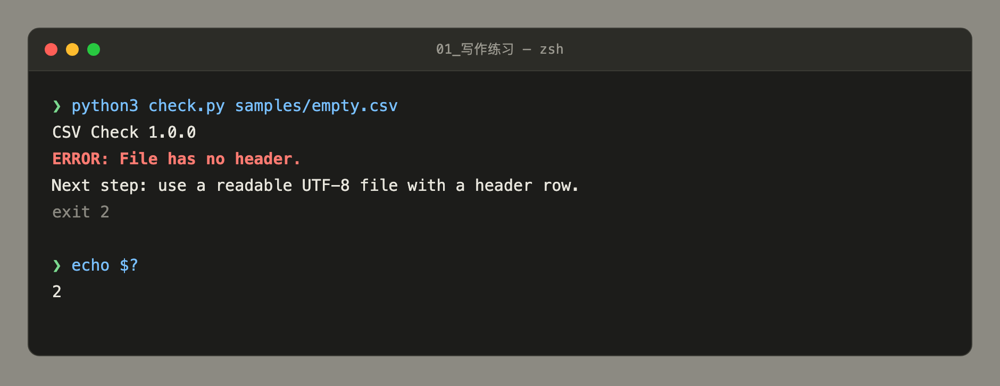
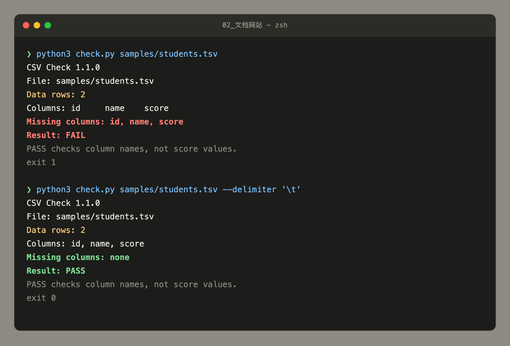
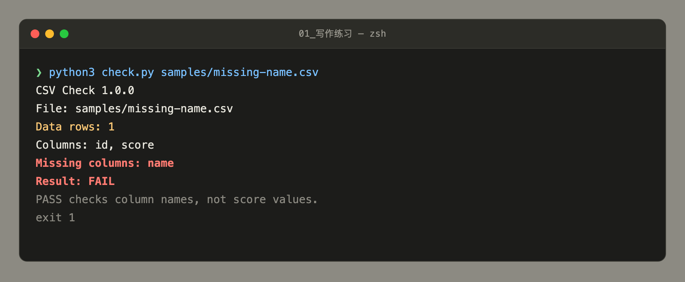
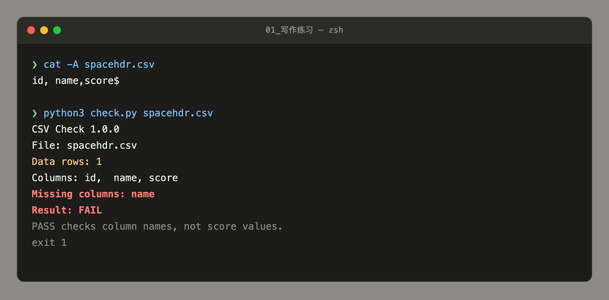
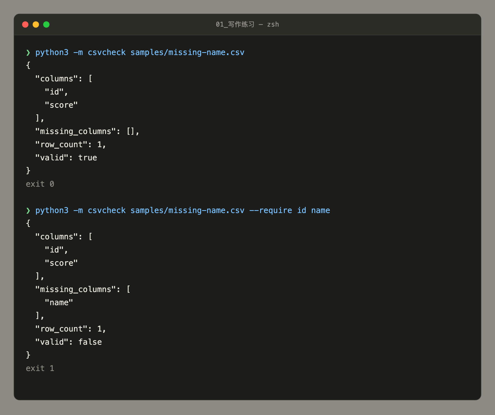

CSV Check 技术文档
一个只读的列名校验工具。在把学生成绩表交给导入系统之前，确认必需的列名是否存在。 本文所有输出片段与截图均来自本机实际运行，非按源码推测。
01功能定位
CSV Check 读取一个 CSV 文件的第一行作为表头，检查列名是否合法、每行字段数是否与表头一致， 最后比对调用方要求的必需列是否齐全。整个过程不修改文件。
它做什么
- 读取表头作为列名
- 检查列名非空、不重复
- 检查每行字段数是否与表头一致
- 比对必需列（区分大小写）
- 输出七行固定格式报告
- 用 0 / 1 / 2 退出码区分结果
它不做什么
- 不修改、不修复文件
- 不校验分数内容
- 不计算任何统计量
- 不检查数据行或学号是否重复
- 不保证导入一定成功
- 发现问题不给改法
PASS 的准确含义是「必需列名齐全且文件结构自洽」，不是「这张表合格」。
score 列里写 abc、写空值、写负数，都不影响结果——工具根本不看数据行里的值。
02环境依赖
| 项目 | 要求 | 说明 |
|---|---|---|
| Python | ≥ 3.8 | 已在 3.12.14 与 3.13.12 实测通过 |
| 第三方包 | 无 | 不需要 pip install，不需要虚拟环境，不需要联网 |
| 操作系统 | 任意 | 纯 Python，唯一差异是解释器命令名 |
工具只用标准库的四个模块：
import argparse # 命令行解析
import csv # CSV 解析
import json # 仅 python -m csvcheck 时输出 JSON
from pathlib import Path # 文件路径文件结构：三者必须同层
缺少任何一个都无法运行：

ls 逐层确认三个必备项都在同一层。
csvcheck/ 里的 __init__.py 与 __main__.py 各司其职，缺一个就报 ModuleNotFoundError。
解释器命令名
| 系统 | 命令 | 备注 |
|---|---|---|
| macOS / Linux | python3 | 系统自带的 /usr/bin/python3 若未装 Xcode 命令行工具会不可用 |
| Windows | py | 部分环境也可用 python |
本文档示例统一使用 python3。在你自己的机器上确认一次可用命令，之后全程沿用同一个。
03准备与校验
不需要安装。进入工具目录后，跑一次已知正常的样例确认环境可用：
cd 01_写作练习
python3 check.py samples/students.csv看到 Result: PASS 就说明环境正常，可以开始使用。若报错，先看
故障排查 第一条，不要急着重装。

exit 0 是我用 echo $? 读出来的真实退出码，
不是工具打印的。注意 Data rows: 3 与 Result: PASS 是判断成功的两行。
04操作步骤
命令与参数
usage: check.py [-h] [--require REQUIRE [REQUIRE ...]] file
Check a student table without changing it.
positional arguments:
file input CSV path
options:
-h, --help show this help message and exit
--require REQUIRE [REQUIRE ...]
required column names (default: id name score)
--help 是最权威的参数说明来源。
注意用法行里没有 --delimiter，因为 1.0.0 不支持该参数。
| 参数 | 必填 | 默认值 | 说明 |
|---|---|---|---|
file | 是 | — | 待检查的 CSV 路径，相对或绝对均可 |
--require | 否 | id name score | 自定义必需列名，空格分隔多个 |
--delimiter | 否 | , | 仅 1.1.0 提供。制表符写作 \t |
-h / --help | 否 | — | 打印帮助并退出 |
--require 使用 nargs="+"，会连续吃掉后面所有非选项词。
它必须放在文件名之后，否则文件名会被当成列名：
# 正确
python3 check.py samples/students.csv --require id name
# 错误：students.csv 被 --require 吃掉，报 file is required
python3 check.py --require id samples/students.csv这个限制只针对 --require。--delimiter 是单值选项，放前放后都成立。

samples/students.csv 被 --require
当成列名吃掉了，所以 argparse 认为没给 file。退出码是 2，与文件解析失败共用。
五个常见场景
场景 A · 检查标准成绩表
cd 01_写作练习
python3 check.py samples/students.csv期望 Data rows: 3、Missing columns: none、Result: PASS，退出码 0（见上方截图 2）。
场景 B · 只要求部分列
python3 check.py samples/students.csv --require id namescore 不在要求内，因此即使缺失也不影响 PASS。
场景 C · 遇到空文件后恢复
第一步，复现问题：
python3 check.py samples/empty.csv
ERROR: 说明症状，
Next step: 给兜底建议。退出码 2 表示「文件读不出表头」，不是「内容不合格」。
第二步，换已知正常的文件重跑：
python3 check.py samples/students.csv确认 Result: PASS 即为恢复。若是自己的数据，回源补上表头行再试，而不是重装工具。
场景 D · 检查制表符分隔的文件（需 1.1.0）
python3 check.py samples/students.tsv --delimiter '\t'
Columns 里能看到制表符，
三列全判缺失。下半段加上 --delimiter '\t' 后 Data rows: 2、PASS。
这就是「退出码 1 不等于缺列」的一个实例。
1.0.0 会报 unrecognized arguments: --delimiter。升级方式见 版本差异。
场景 E · 在脚本中调用
python3 check.py data.csv
case $? in
0) echo "通过" ;;
1) echo "缺列，需要改表头" ;;
2) echo "文件读不了，检查编码或分隔符" ;;
esac05预期输出
成功读到表头后，固定输出七行：
| 行 | 含义 | 易错点 |
|---|---|---|
CSV Check <版本> | 工具版本号 | 排查问题时先确认版本 |
File: <路径> | 回显传入路径 | 原样回显，不展开为绝对路径 |
Data rows: <n> | 数据记录条数 | 不含表头。4 行文件显示 3 |
Columns: <列名> | 文件中实际读到的列名 | 是文件里的，不是要求的 |
Missing columns: … | 缺失的必需列 | 顺序与 --require 一致 |
Result: PASS/FAIL | 总判定 | 只看列名 |
| 固定提示句 | 工具自带的边界声明 | 是原始输出的一部分，不应删除 |
对照：FAIL 长什么样

Missing columns: 列出缺失列，
Result: 变成 FAIL。注意文件仍然被完整读取（Data rows: 1），不是错误退出。
判定规则：missing_columns 为空 → PASS；非空 → FAIL。
第 3、4 行的对照价值：当 Columns 里出现带空格或制表符的怪名字时，说明分隔符或导出格式有问题，而不是数据有问题。
退出码含义
| 退出码 | 触发条件 | 含义 | 典型样例 |
|---|---|---|---|
| 0 | 必需列齐全 | 校验通过 | students.csv |
| 1 | 文件可读，但有必需列缺失 | 内容不合格 | missing-name.csv |
| 2 | 文件无法解析（无表头、编码错、结构错） | 输入不合格 | empty.csv |
参数错误也用 2。argparse 自身的参数错误（缺 file、未知选项）同样返回 2，
与文件解析失败共用退出码。脚本若要区分，需看 stderr 内容。见截图 4。
退出码 1 不等于「只有缺列一种原因」。
students.tsv 在 1.0.0 下也返回 1，但根因是整行被当作单列、三列全缺，属分隔符问题。
不能把 1 直接等同于「表头少写了某列」。见截图 6。
06故障排查
展开对应条目查看原因与处理。所有报错文本均为实际输出的原文。
ERROR: File has no header. 2
原因文件为空；或首行是空行；或选错了文件。
处理补表头行，或确认路径指向了正确的文件。用 samples/students.csv 重跑可验证工具本身正常。
实际输出见截图 5。
ERROR: Header names must not be blank. 2
原因某个列名为空或纯空白。常见于 id,,score。
处理补上列名。注意：这一项检查用了 strip()，所以纯空格也算空。
ERROR: Header names must be unique. 2
原因两列同名，通常是复制粘贴造成的重复。
处理改名，确保表头内每个列名唯一。
ERROR: Row N has X fields; expected Y. 2
原因第 N 行的字段数与表头列数不符，一般是漏写或多写了分隔符。
处理定位到第 N 行，检查该行的分隔符数量。注意 N 是文件行号，含表头。
ERROR: Cannot read a UTF-8 CSV file: … 2
原因三种可能：编码不是 UTF-8；路径不存在；路径指向的是一个目录。
处理把文件转存为 UTF-8；核对路径拼写；确认传的是文件而非文件夹。
实测三种原文
# 非 UTF-8 字节
Cannot read a UTF-8 CSV file: 'utf-8' codec can't decode byte 0xe1 in position 18
# 文件不存在
Cannot read a UTF-8 CSV file: [Errno 2] No such file or directory: 'nope.csv'
# 传的是目录
Cannot read a UTF-8 CSV file: [Errno 21] Is a directory: 'adir'ERROR: Delimiter must be one character… 2
原因--delimiter 传了多字符，或传了换行。仅 1.1.0 有这个检查。
处理传单个字符。制表符写作 '\t'（两个字符的转义写法，工具会自行转换）。
check.py: error: the following arguments are required: file 2
原因把 --require 放到了文件名前面，文件名被当成列名吃掉了。
处理把文件名移到最前，或把 --require 放到最后。见截图 4。
unrecognized arguments: --delimiter 2
原因用的是 1.0.0，该版本不支持 --delimiter。
处理升级到 1.1.0，见 版本差异。
Result: FAIL 但看不出哪里缺列
原因看 Missing columns: 那一行。Columns: 是文件里实际读到的列名，两者对照即可定位。
常见误判表头带空格。写 id, name,score（name 前有空格）时，工具会认为缺 name。
因为非空检查用了 strip()，比对却用原字符串。从 Excel 导出的表常带这种空格，需手工清掉。
实际输出见下方截图 8。

cat -A 把不可见字符显示出来（行尾的 $ 是行结束标记），
能看到 id, name,score 里 name 前确实有个空格。
Columns 输出里保留了双空格，可比对确认。
文件明明有 4 行，为什么显示 Data rows: 3
原因不是错误。Data rows 统计的是数据记录，不含表头。
说明students.csv 共 4 行：第 1 行 id,name,score 是表头，后 3 行是数据，所以显示 3。
校验顺序与陷阱
报错只报第一个命中的问题，顺序固定为：
打开文件 → 读表头 → 表头空值 → 表头重复 → 逐行字段数 → 比对必需列如果某一行字段数不对，工具直接报 ERROR，不会告诉你缺哪列。 所以「补表头」和「改分隔符」是两类完全不同的修法，不能混为一谈。
通用的 Next step 有局限
所有 ERROR 分支都会打印同一句
Next step: use a readable UTF-8 file with a header row.
这句对编码类错误贴切，但对「字段数不符」「分隔符非法」并不精准。
排查时应以 ERROR: 那一行为准，把 Next step 当作兜底建议。
07版本差异
| 项目 | 1.0.0 | 1.1.0 |
|---|---|---|
--delimiter | 不支持 | 支持，默认 ,，\t 表示制表符 |
inspect_csv 签名 | (path, required_columns=()) | (path, required_columns=(), *, delimiter=",") |
| 分隔符校验 | — | 非单字符或为 CR/LF 时报错 |
| TSV 支持 | 误判为单列，FAIL | 加 --delimiter '\t' 后正常 PASS |
升级方法：把 updates/v1.1/ 下的 check.py、
csvcheck/__init__.py、csvcheck/__main__.py 复制覆盖到工具目录。
apply_update.py 封装了这个动作，且不会动 docs/ 里的文档。
1.1.0 的实际效果见截图 6。
两个入口的默认值不一致
| 入口 | --require 默认值 |
|---|---|
check.py | id name score |
python -m csvcheck | 空（不要求任何列） |

missing-name.csv，
因为没要求检查 name，结果是 valid: true、exit 0。
下半段加上 --require id name 才报出 valid: false、exit 1。
同一文件用 check.py 检查是 Result: FAIL、退出码 1（截图 7），
用 python -m csvcheck 不带参数却是 valid: true、退出码 0（截图 9 上半段）。
把工具接进自动化脚本时，这个差异会直接导致漏检。
08已知限制
-
空数据表会 PASS。只有表头、没有数据行的文件，
Data rows: 0且Result: PASS。 如果业务上空表应当拒绝，需调用方额外判断row_count > 0。 -
表头空格不清理。
id, name,score会被判为缺name，见截图 8。 -
只认一个分隔符。混合分隔、分号分隔都在 1.1.0 里靠
--delimiter逐个指定。 - 不做字段类型转换。全部按字符串处理，反正不校验数据值。
-
--require无法表达「可选」。一次调用只有一组必需列。 -
两个入口默认检查项不同，见 版本差异与截图 9，模块方式不传
--require等于不检查。 -
无
--quiet/--json开关。脚本要 JSON 只能走python -m csvcheck，两者输出格式不同。
输入要求汇总
| 要求 | 说明 | 不满足的后果 |
|---|---|---|
| UTF-8 编码 | 允许带 BOM（按 utf-8-sig 读取） | 报 Cannot read a UTF-8 CSV file，退出码 2 |
| 必须有表头行 | 第一行视为列名 | 报 File has no header.，退出码 2 |
| 列名非空 | 单个列名不能只有空白 | 报 Header names must not be blank.，退出码 2 |
| 列名唯一 | 不能有两列同名 | 报 Header names must be unique.，退出码 2 |
| 字段数一致 | 每行字段数 = 表头列数 | 报 Row N has X fields; expected Y.，退出码 2 |
| 默认逗号分隔 | 1.0.0 硬编码逗号 | TSV 等文件需 1.1.0 的 --delimiter |
另有两类输入可以正常处理，不必担心：
带 BOM 的 UTF-8 文件（Data rows 正确、PASS）；
引号内含逗号的值，如 1,"Ada, Jr",95（按 CSV 标准解析，Data rows: 1、PASS）。